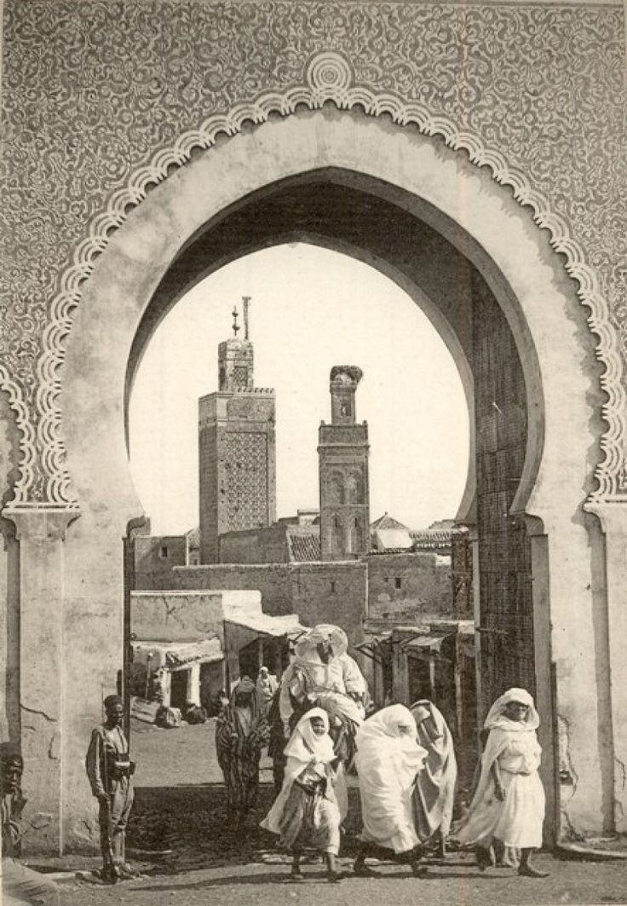

Marrakech was established in 1062 by Abu Bakr ibn Umar, the chieftain of the Almoravid dynasty.
What began as a strategic military camp was soon transformed by his successor, Yusuf ibn Tashfin, into a grand imperial capital. Nestled at the foot of the High Atlas Mountains, the city served as a vital trade bridge between sub-Saharan Africa and the Mediterranean.
Its iconic red sandstone ramparts, built for defense, eventually earned it the enduring nickname, "The Red City." As a powerhouse of the Maghreb, it flourished as a center for Islamic scholarship, intricate architecture, and vibrant commerce.
The city's foundation laid the groundwork for the historic Medina, which survives today as a celebrated UNESCO World Heritage site. From a desert outpost to a global cultural icon, Marrakech remains the beating heart of Moroccan history and identity.
